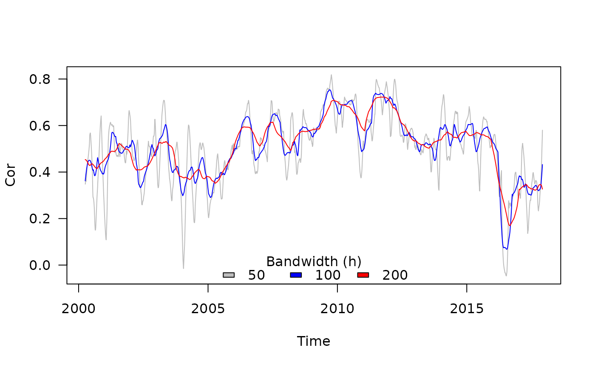
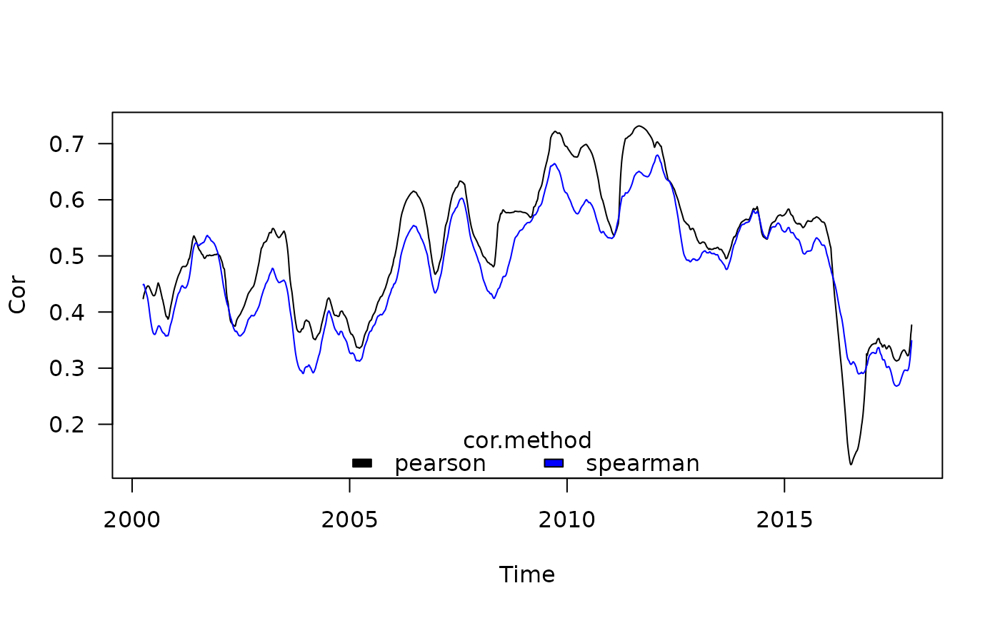
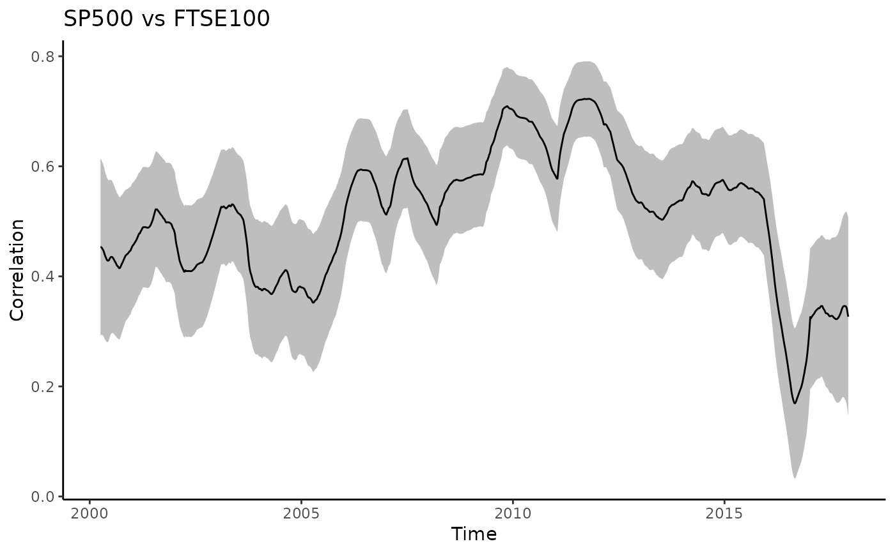
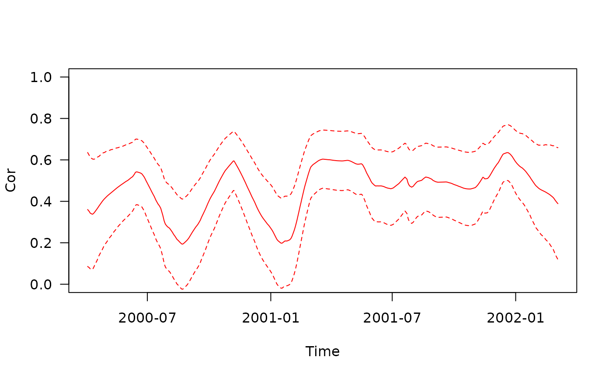
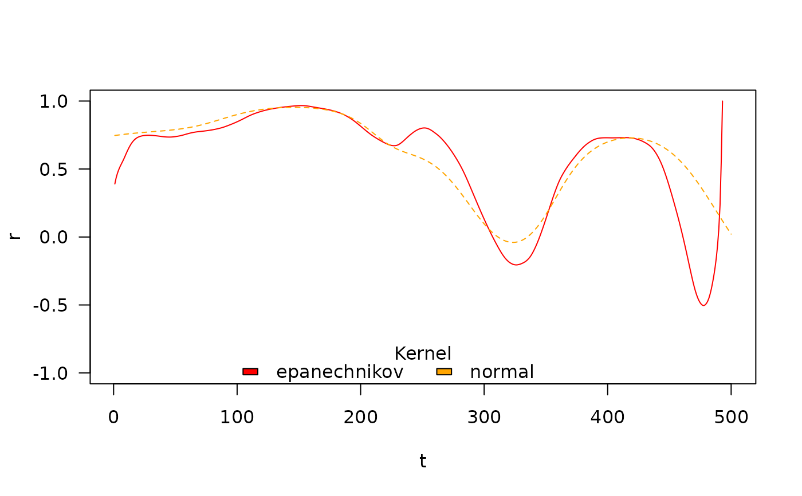
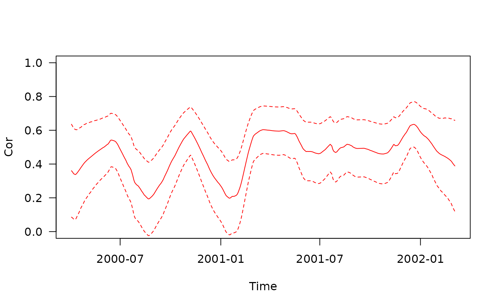
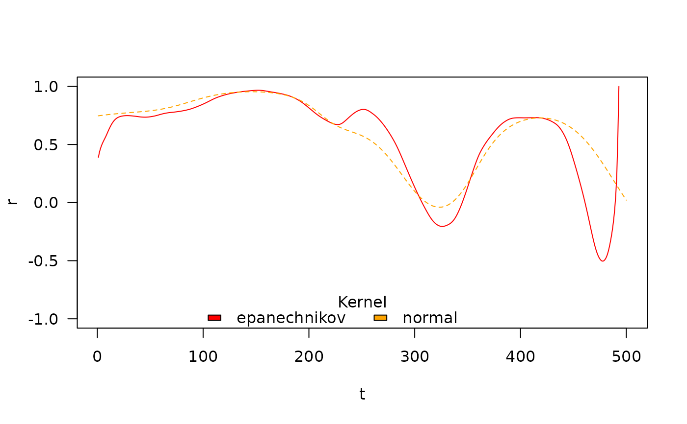

The function tcor() implements (together with its helper function
calc_rho()) the nonparametric estimation of the time varying correlation
coefficient proposed by Choi & Shin (2021). The general idea is to compute a
(Pearson) correlation coefficient (\(r(x,y) = \frac{\hat{xy} - \hat{x}\times\hat{y}}{
\sqrt{\hat{x^2}-\hat{x}^2} \times \sqrt{\hat{y^2}-\hat{y}^2}}\)), but instead of
using the means required for such a computation, each component (i.e.,
\(x\), \(y\), \(x^2\), \(y^2\), \(x \times y\)) is smoothed and the
smoothed terms are considered in place the original means. The intensity of
the smoothing depends on a unique parameter: the bandwidth (h). If h = Inf, the method produces the original (i.e., time-invariant) correlation
value. The smaller the parameter h, the more variation in time is being
captured. The parameter h can be provided by the user; otherwise it is
automatically estimated by the internal helper functions select_h() and
calc_RMSE() (see Details).
Usage
tcor(
x,
y,
t = seq_along(x),
h = NULL,
cor.method = c("pearson", "spearman"),
kernel = c("epanechnikov", "box", "normal"),
CI = FALSE,
CI.level = 0.95,
param_smoother = list(),
keep.missing = FALSE,
verbose = FALSE
)
calc_rho(
x,
y,
t = seq_along(x),
t.for.pred = t,
h,
cor.method = c("pearson", "spearman"),
kernel = c("epanechnikov", "box", "normal"),
param_smoother = list()
)
calc_RMSE(
h,
x,
y,
t = seq_along(x),
cor.method = c("pearson", "spearman"),
kernel = c("epanechnikov", "box", "normal"),
param_smoother = list(),
verbose = FALSE
)
select_h(
x,
y,
t = seq_along(x),
cor.method = c("pearson", "spearman"),
kernel = c("epanechnikov", "box", "normal"),
param_smoother = list(),
verbose = FALSE
)Arguments
- x
a numeric vector.
- y
a numeric vector of to be correlated with
x.- t
a (numeric or Date) vector of time points. If missing, observations are considered to correspond to sequential time steps (i.e., 1, 2 ...).
- h
a scalar indicating the bandwidth used by the smoothing function.
- cor.method
a character string indicating which correlation coefficient is to be computed ("pearson", the default; or "spearman").
- kernel
a character string indicating which kernel to use: "epanechnikov" (the default), "box", or "normal" (abbreviations also work).
- CI
a logical specifying if a confidence interval should be computed or not (default =
FALSE).- CI.level
a scalar defining the level for
CI(default = 0.95 for 95% CI).- param_smoother
a list of additional parameters to provide to the internal smoothing function (see Details).
- keep.missing
a logical specifying if time points associated with missing information should be kept in the output (default =
FALSEto facilitate plotting).- verbose
a logical specifying if information should be displayed to monitor the progress of the cross validation (default =
FALSE).- t.for.pred
a (numeric or Date) vector of time points at which to evaluate the smoothed fit. If missing,
tis used.
Value
---Output for tcor()---
A 2 x \(t\) dataframe containing:
the time points (
t).the estimates of the correlation value (
r).
Or, if CI = TRUE, a 5 x \(t\) dataframe containing:
the time points (
t).the estimates of the correlation value (
r).the Standard Error (
SE).the lower boundary of the confidence intervals (
lwr).the upper boundary of the confidence intervals (
upr).
Some metadata are also attached to the dataframe (as attributes):
the call to the function (
call).the argument
CI.the bandwidth parameter (
h).the method used to select
h(h_selection).the minimal root mean square error when
his selected (RMSE).the computing time (in seconds) spent to select the bandwidth parameter (
h_selection_duration) ifhautomatically selected.
---Output for calc_rho()---
A 14 x \(t\) dataframe with:
the six raw components of correlation (
x,y,x2,y2,xy).the time points (
t).the six raw components of correlation after smoothing (
x_smoothed,y_smoothed,x2_smoothed,y2_smoothed,xy_smoothed).the standard deviation around \(x\) and \(y\) (
sd_x_smoothed,sd_y_smoothed).the smoothed correlation coefficient (
rho_smoothed).
---Output for calc_RMSE()---
A scalar of class numeric corresponding to the RMSE.
---Output for select_h()---
A list with the following components:
the selected bandwidth parameter (
h).the method used to select
h(h_selection).the minimal root mean square error when
his selected (RMSE).the computing time (in seconds) spent to select the bandwidth parameter (
time).
Details
Smoothing: the smoothing of each component is performed by kernel regression. The default is to use the Epanechnikov kernel following Choi & Shin (2021), but other kernels have also been implemented and can thus alternatively be used (see
kern_smooth()for details). The normal kernel seems to sometimes lead to very small bandwidth being selected, but the default kernel can lead to numerical issues (see next point). We thus recommend always comparing the results from different kernel methods.Numerical issues: some numerical issues can happen because the smoothing is performed independently on each component of the correlation coefficient. As a consequence, some relationship between components may become violated for some time points. For instance, if the square of the smoothed \(x\) term gets larger than the smoothed \(x^2\) term, the variance of \(x\) would become negative. In such cases, coefficient values returned are
NA.Bandwidth selection: when the value used to define the bandwidth (
h) intcor()is set toNULL(the default), the internal functionselect_h()is used to to select the optimal value forh. It is first estimated by leave-one-out cross validation (using internallycalc_RMSE()). If the cross validation error (RMSE) is minimal for the maximal value ofhconsidered (\(8\sqrt{N}\)), rather than taking this as the optimalhvalue, the bandwidth becomes estimated using the so-called elbow criterion. This latter method identifies the valuehafter which the cross validation error decreasing very little. The procedure is detailed in section 2.1 in Choi & Shin (2021).Parallel computation: if
his not provided, an automatic bandwidth selection occurs (see above). For large datasets, this step can be computationally demanding. The current implementation thus relies onparallel::mclapply()and is thus only effective for Linux and MacOS. Relying on parallel processing also implies that you calloptions("mc.cores" = XX)beforehand, replacingXXby the relevant number of CPU cores you want to use (see Examples). For debugging, do useoptions("mc.cores" = 1), otherwise you may not be able to see the error messages generated in child nodes.Confidence interval: if
CIis set toTRUE, a confidence interval is calculated as described in Choi & Shin (2021). This is also necessary for usingtest_equality()to test differences between correlations at two time points. The computation of the confidence intervals involves multiple internal functions (seeCIfor details).
Functions
tcor(): the user-level function to be used.calc_rho(): computes the correlation for a given bandwidth.The function calls the kernel smoothing procedure on each component required to compute the time-varying correlation.
calc_RMSE(): Internal function computing the root mean square error (RMSE) for a given bandwidth.The function removes each time point one by one and predicts the correlation at the missing time point based on the other time points. It then computes and returns the RMSE between this predicted correlation and the one predicted using the full dataset. See also Bandwidth selection and Parallel computation in Details.
select_h(): Internal function selecting the optimal bandwidth parameterh.The function selects and returns the optimal bandwidth parameter
husing an optimizer (stats::optimize()) which searches thehvalue associated with the smallest RMSE returned bycalc_RMSE(). See also Bandwidth selection in Details.
References
Choi, JE., Shin, D.W. Nonparametric estimation of time varying correlation coefficient. J. Korean Stat. Soc. 50, 333–353 (2021). doi:10.1007/s42952-020-00073-6
Examples
#####################################################
## Examples for the user-level function to be used ##
#####################################################
## Effect of the bandwidth
res_h50 <- with(stockprice, tcor(x = SP500, y = FTSE100, t = DateID, h = 50))
res_h100 <- with(stockprice, tcor(x = SP500, y = FTSE100, t = DateID, h = 100))
res_h200 <- with(stockprice, tcor(x = SP500, y = FTSE100, t = DateID, h = 200))
plot(res_h50, type = "l", ylab = "Cor", xlab = "Time", las = 1, col = "grey")
points(res_h100, type = "l", col = "blue")
points(res_h200, type = "l", col = "red")
legend("bottom", horiz = TRUE, fill = c("grey", "blue", "red"),
legend = c("50", "100", "200"), bty = "n", title = "Bandwidth (h)")

## Effect of the correlation method
res_pearson <- with(stockprice, tcor(x = SP500, y = FTSE100, t = DateID, h = 150))
res_spearman <- with(stockprice, tcor(x = SP500, y = FTSE100, t = DateID, h = 150,
cor.method = "spearman"))
plot(res_pearson, type = "l", ylab = "Cor", xlab = "Time", las = 1)
points(res_spearman, type = "l", col = "blue")
legend("bottom", horiz = TRUE, fill = c("black", "blue"),
legend = c("pearson", "spearman"), bty = "n", title = "cor.method")

## Infinite bandwidth should match fixed correlation coefficients
## nb: `h = Inf` is not supported by default kernel (`kernel = 'epanechnikov'`)
res_pearson_hInf <- with(stockprice, tcor(x = SP500, y = FTSE100, t = DateID, h = Inf,
kernel = "normal"))
res_spearman_hInf <- with(stockprice, tcor(x = SP500, y = FTSE100, t = DateID, h = Inf,
kernel = "normal", cor.method = "spearman"))
r <- cor(stockprice$SP500, stockprice$FTSE100, use = "pairwise.complete.obs")
rho <- cor(stockprice$SP500, stockprice$FTSE100, method = "spearman", use = "pairwise.complete.obs")
round(unique(res_pearson_hInf$r) - r, digits = 3) ## 0 indicates near equality
#> [1] 0
round(unique(res_spearman_hInf$r) - rho, digits = 3) ## 0 indicates near equality
#> [1] 0
## Computing and plotting the confidence interval
res_withCI <- with(stockprice, tcor(x = SP500, y = FTSE100, t = DateID, h = 200, CI = TRUE))
with(res_withCI, {
plot(r ~ t, type = "l", ylab = "Cor", xlab = "Time", las = 1, ylim = c(0, 1))
points(lwr ~ t, type = "l", lty = 2)
points(upr ~ t, type = "l", lty = 2)})
## Same using tidyverse packages (dplyr and ggplot2 must be installed)
## see https://github.com/courtiol/timevarcorr for more examples of this kind
if (require("dplyr", warn.conflicts = FALSE)) {
stockprice |>
reframe(tcor(x = SP500, y = FTSE100, t = DateID,
h = 200, CI = TRUE)) -> res_tidy
res_tidy
}
#> Loading required package: dplyr
#> # A tibble: 4,326 × 5
#> t r SE lwr upr
#> <date> <dbl> <dbl> <dbl> <dbl>
#> 1 2000-04-03 0.453 0.0823 0.292 0.615
#> 2 2000-04-04 0.453 0.0821 0.292 0.614
#> 3 2000-04-05 0.453 0.0819 0.293 0.614
#> 4 2000-04-06 0.453 0.0817 0.293 0.613
#> 5 2000-04-07 0.453 0.0815 0.294 0.613
#> 6 2000-04-10 0.453 0.0813 0.294 0.612
#> 7 2000-04-11 0.453 0.0811 0.294 0.612
#> 8 2000-04-12 0.452 0.0809 0.294 0.611
#> 9 2000-04-13 0.452 0.0807 0.294 0.610
#> 10 2000-04-14 0.452 0.0805 0.294 0.610
#> # ℹ 4,316 more rows
if (require("ggplot2")) {
ggplot(res_tidy) +
aes(x = t, y = r, ymin = lwr, ymax = upr) +
geom_ribbon(fill = "grey") +
geom_line() +
labs(title = "SP500 vs FTSE100", x = "Time", y = "Correlation") +
theme_classic()
}
#> Loading required package: ggplot2

## Automatic selection of the bandwidth using parallel processing and comparison
## of the 3 alternative kernels on the first 500 time points of the dataset
# nb: takes a few seconds to run, so not run by default
run <- in_pkgdown() || FALSE ## change to TRUE to run the example
if (run) {
options("mc.cores" = 2L) ## CPU cores to be used for parallel processing
res_hauto_epanech <- with(stockprice[1:500, ],
tcor(x = SP500, y = FTSE100, t = DateID, kernel = "epanechnikov")
)
res_hauto_box <- with(stockprice[1:500, ],
tcor(x = SP500, y = FTSE100, t = DateID, kernel = "box")
)
res_hauto_norm <- with(stockprice[1:500, ],
tcor(x = SP500, y = FTSE100, t = DateID, kernel = "norm")
)
plot(res_hauto_epanech, type = "l", col = "red",
ylab = "Cor", xlab = "Time", las = 1, ylim = c(0, 1))
points(res_hauto_box, type = "l", col = "grey")
points(res_hauto_norm, type = "l", col = "orange")
legend("top", horiz = TRUE, fill = c("red", "grey", "orange"),
legend = c("epanechnikov", "box", "normal"), bty = "n",
title = "Kernel")
}
#> h selected using LOO-CV = 57.3
#> Bandwidth automatic selection completed in 5.9 seconds
#> h selected using LOO-CV = 75.6
#> Bandwidth automatic selection completed in 8.8 seconds
#> h selected using LOO-CV = 60.9
#> Bandwidth automatic selection completed in 8.7 seconds
## Comparison of the 3 alternative kernels under same bandwidth
## nb: it requires to have run the previous example
if (run) {
res_epanech <- with(stockprice[1:500, ],
tcor(x = SP500, y = FTSE100, t = DateID,
kernel = "epanechnikov", h = attr(res_hauto_epanech, "h"))
)
res_box <- with(stockprice[1:500, ],
tcor(x = SP500, y = FTSE100, t = DateID,
kernel = "box", h = attr(res_hauto_epanech, "h"))
)
res_norm <- with(stockprice[1:500, ],
tcor(x = SP500, y = FTSE100, t = DateID,
kernel = "norm", h = attr(res_hauto_epanech, "h"))
)
plot(res_epanech, type = "l", col = "red", ylab = "Cor", xlab = "Time",
las = 1, ylim = c(0, 1))
points(res_box, type = "l", col = "grey")
points(res_norm, type = "l", col = "orange")
legend("top", horiz = TRUE, fill = c("red", "grey", "orange"),
legend = c("epanechnikov", "box", "normal"), bty = "n",
title = "Kernel")
}
 ## Automatic selection of the bandwidth using parallel processing with CI
# nb: takes a few seconds to run, so not run by default
run <- in_pkgdown() || FALSE ## change to TRUE to run the example
if (run) {
res_hauto_epanechCI <- with(stockprice[1:500, ],
tcor(x = SP500, y = FTSE100, t = DateID, CI = TRUE)
)
plot(res_hauto_epanechCI[, c("t", "r")], type = "l", col = "red",
ylab = "Cor", xlab = "Time", las = 1, ylim = c(0, 1))
points(res_hauto_epanechCI[, c("t", "lwr")], type = "l", col = "red", lty = 2)
points(res_hauto_epanechCI[, c("t", "upr")], type = "l", col = "red", lty = 2)
}
#> h selected using LOO-CV = 57.3
#> Bandwidth automatic selection completed in 6 seconds

## Not all kernels work well in all situations
## Here the default kernell estimation leads to issues for last time points
## nb1: EuStockMarkets is a time-series object provided with R
## nb2: takes a few minutes to run, so not run by default
run <- in_pkgdown() || FALSE ## change to TRUE to run the example
if (run) {
EuStock_epanech <- tcor(EuStockMarkets[1:500, "DAX"], EuStockMarkets[1:500, "SMI"])
EuStock_norm <- tcor(EuStockMarkets[1:500, "DAX"], EuStockMarkets[1:500, "SMI"], kernel = "normal")
plot(EuStock_epanech, type = "l", col = "red", las = 1, ylim = c(-1, 1))
points(EuStock_norm, type = "l", col = "orange", lty = 2)
legend("bottom", horiz = TRUE, fill = c("red", "orange"),
legend = c("epanechnikov", "normal"), bty = "n",
title = "Kernel")
}
#> h selected using LOO-CV = 71.7
#> Bandwidth automatic selection completed in 4.5 seconds
#>
#> Numerical issues occured when computing the correlation values for the bandwidth value h = 71.7 resulting in `NA`(s) (see Details on *Numerical issues* in `?tcor`).
#> You may want to:
#> - try another bandwidth value using the argument `h`
#> - try another kernel using the argument `kernel`
#> - adjust the smoothing parameters using the argument `param_smoother` (see `?kern_smooth`).
#> This may not be an issue, if you are estimating `h` automatically, as issues may occur only for sub-optimal bandwidth values.
#> Warning: 1 out of 500 correlation values were estimated out of the [-1, 1] range and where thus forced to [-1, 1]. Using another kernel may avoid such problem.
#> h selected using LOO-CV = 178.3
#> h selected using elbow criterion = 54
#> Bandwidth automatic selection completed in 17.9 seconds

##################################################################
## Examples for the internal function computing the correlation ##
##################################################################
## Computing the correlation and its component for the first six time points
with(head(stockprice), calc_rho(x = SP500, y = FTSE100, t = DateID, h = 20))
#> x y x2 y2 xy t
#> 1 0.004361280 -0.010096362 1.902076e-05 1.019365e-04 -4.403306e-05 2000-04-03
#> 2 -0.007980069 -0.003332639 6.368150e-05 1.110648e-05 2.659469e-05 2000-04-04
#> 3 -0.004479051 -0.007449493 2.006189e-05 5.549494e-05 3.336666e-05 2000-04-05
#> 4 0.008375645 0.011874107 7.015143e-05 1.409944e-04 9.945331e-05 2000-04-06
#> 5 0.009697455 0.015107515 9.404064e-05 2.282370e-04 1.465045e-04 2000-04-07
#> 6 -0.007420214 -0.004377977 5.505958e-05 1.916668e-05 3.248553e-05 2000-04-10
#> x_smoothed y_smoothed x2_smoothed y2_smoothed xy_smoothed
#> 1 0.0013418481 -0.0039462414 3.798239e-05 8.905361e-05 1.271878e-05
#> 2 0.0010704776 -0.0023441914 4.372446e-05 9.103955e-05 2.628156e-05
#> 3 0.0007590436 -0.0008249469 4.930863e-05 9.252018e-05 3.927963e-05
#> 4 0.0004106755 0.0006175389 5.474643e-05 9.353427e-05 5.175352e-05
#> 5 0.0000271654 0.0019865563 6.004416e-05 9.410375e-05 6.372498e-05
#> 6 -0.0013336726 0.0056494153 7.509061e-05 9.314396e-05 9.659432e-05
#> sd_x_smoothed sd_y_smoothed rho_smoothed
#> 1 0.006015134 0.008572093 0.3493645
#> 2 0.006525224 0.009249017 0.4770515
#> 3 0.006980866 0.009583300 0.5965016
#> 4 0.007387678 0.009651576 0.7222712
#> 5 0.007748769 0.009495122 0.8653833
#> 6 0.008562239 0.007824836 1.5542048
## Predicting the correlation and its component at a specific time point
with(head(stockprice), calc_rho(x = SP500, y = FTSE100, t = DateID, h = 20,
t.for.pred = DateID[1]))
#> x y x2 y2 xy t
#> 1 0.00436128 -0.01009636 1.902076e-05 0.0001019365 -4.403306e-05 2000-04-03
#> x_smoothed y_smoothed x2_smoothed y2_smoothed xy_smoothed sd_x_smoothed
#> 1 0.001341848 -0.003946241 3.798239e-05 8.905361e-05 1.271878e-05 0.006015134
#> sd_y_smoothed rho_smoothed
#> 1 0.008572093 0.3493645
## The function can handle non consecutive time points
set.seed(1)
calc_rho(x = rnorm(10), y = rnorm(10), t = c(1:5, 26:30), h = 3, kernel = "box")
#> x y x2 y2 xy t x_smoothed
#> 1 -0.6264538 1.51178117 0.39244438 2.2854823013 -0.947061074 1 -0.2214052
#> 2 0.1836433 0.38984324 0.03372487 0.1519777490 0.071592108 2 -0.4261464
#> 3 -0.8356286 -0.62124058 0.69827518 0.3859398589 0.519126404 3 0.3144318
#> 4 1.5952808 -2.21469989 2.54492084 4.9048955903 -3.533068213 4 0.3630533
#> 5 0.3295078 1.12493092 0.10857537 1.2654695706 0.370673480 5 0.9623943
#> 6 -0.8204684 -0.04493361 0.67316837 0.0020190292 0.036866606 26 -0.1665197
#> 7 0.4874291 -0.01619026 0.23758708 0.0002621246 -0.007891605 27 0.1350951
#> 8 0.7383247 0.94383621 0.54512337 0.8908267926 0.696857592 28 0.6005117
#> 9 0.5757814 0.82122120 0.33152416 0.6744042513 0.472843850 29 0.3362392
#> 10 -0.3053884 0.59390132 0.09326207 0.3527187793 -0.181370567 30 0.1351965
#> y_smoothed x2_smoothed y2_smoothed xy_smoothed sd_x_smoothed sd_y_smoothed
#> 1 0.95081220 0.2130846 1.218730025 -0.4377345 0.4050486 0.56096897
#> 2 0.42679461 0.3748148 0.941133303 -0.1187809 0.4395612 0.87119439
#> 3 -0.81536574 1.0923070 1.814271066 -0.9807832 0.9967144 1.07212395
#> 4 -0.57033652 1.1172571 2.185435007 -0.8810894 0.9926980 1.36387362
#> 5 -0.54488448 1.3267481 3.085182580 -1.5811974 0.6328865 1.66981540
#> 6 -0.03056194 0.4553777 0.001140577 0.0144875 0.6539487 0.01437167
#> 7 0.29423745 0.4852929 0.297702649 0.2419442 0.6834049 0.45948555
#> 8 0.58295571 0.3714115 0.521831056 0.3872699 0.1039097 0.42660719
#> 9 0.78631958 0.3233032 0.639316608 0.3294436 0.4585263 0.14497632
#> 10 0.70756126 0.2123931 0.513561515 0.1457366 0.4405849 0.11365994
#> rho_smoothed
#> 1 -1.0000000
#> 2 0.1647662
#> 3 -0.6779013
#> 4 -0.4978356
#> 5 -1.0000000
#> 6 1.0000000
#> 7 0.6439003
#> 8 0.8391464
#> 9 0.9785889
#> 10 1.0000000
## The function can handle non-ordered time series
with(head(stockprice)[c(1, 3, 6, 2, 4, 5), ], calc_rho(x = SP500, y = FTSE100, t = DateID, h = 20))
#> x y x2 y2 xy t
#> 1 0.004361280 -0.010096362 1.902076e-05 1.019365e-04 -4.403306e-05 2000-04-03
#> 2 -0.004479051 -0.007449493 2.006189e-05 5.549494e-05 3.336666e-05 2000-04-06
#> 3 -0.007420214 -0.004377977 5.505958e-05 1.916668e-05 3.248553e-05 2000-04-04
#> 4 -0.007980069 -0.003332639 6.368150e-05 1.110648e-05 2.659469e-05 2000-04-07
#> 5 0.008375645 0.011874107 7.015143e-05 1.409944e-04 9.945331e-05 2000-04-10
#> 6 0.009697455 0.015107515 9.404064e-05 2.282370e-04 1.465045e-04 2000-04-05
#> x_smoothed y_smoothed x2_smoothed y2_smoothed xy_smoothed
#> 1 0.0013418481 -0.0039462414 3.798239e-05 8.905361e-05 1.271878e-05
#> 2 0.0004106755 0.0006175389 5.474643e-05 9.353427e-05 5.175352e-05
#> 3 0.0010704776 -0.0023441914 4.372446e-05 9.103955e-05 2.628156e-05
#> 4 0.0000271654 0.0019865563 6.004416e-05 9.410375e-05 6.372498e-05
#> 5 -0.0013336726 0.0056494153 7.509061e-05 9.314396e-05 9.659432e-05
#> 6 0.0007590436 -0.0008249469 4.930863e-05 9.252018e-05 3.927963e-05
#> sd_x_smoothed sd_y_smoothed rho_smoothed
#> 1 0.006015134 0.008572093 0.3493645
#> 2 0.007387678 0.009651576 0.7222712
#> 3 0.006525224 0.009249017 0.4770515
#> 4 0.007748769 0.009495122 0.8653833
#> 5 0.008562239 0.007824836 1.5542048
#> 6 0.006980866 0.009583300 0.5965016
## Note: the function does not handle missing data (by design)
# calc_rho(x = c(NA, rnorm(9)), y = rnorm(10), t = c(1:2, 23:30), h = 2) ## should err (if ran)
###########################################################
## Examples for the internal function computing the RMSE ##
###########################################################
## Compute the RMSE on the correlation estimate
# nb: takes a few seconds to run, so not run by default
run <- in_pkgdown() || FALSE ## change to TRUE to run the example
if (run) {
small_clean_dataset <- head(na.omit(stockprice), n = 200)
with(small_clean_dataset, calc_RMSE(x = SP500, y = FTSE100, t = DateID, h = 10))
}
#> [1] 1.541382
################################################################
## Examples for the internal function selecting the bandwidth ##
################################################################
## Automatic selection of the bandwidth using parallel processing
# nb: takes a few seconds to run, so not run by default
run <- in_pkgdown() || FALSE ## change to TRUE to run the example
if (run) {
small_clean_dataset <- head(na.omit(stockprice), n = 200)
with(small_clean_dataset, select_h(x = SP500, y = FTSE100, t = DateID))
}
#> h selected using LOO-CV = 105.1
#> Bandwidth automatic selection completed in 3.4 seconds
#> $h
#> [1] 105.0813
#>
#> $h_selection
#> [1] "LOO-CV"
#>
#> $RMSE
#> [1] 1.234257
#>
#> $time
#> elapsed
#> 3.418
#>
## Automatic selection of the bandwidth using parallel processing with CI
# nb: takes a few seconds to run, so not run by default
run <- in_pkgdown() || FALSE ## change to TRUE to run the example
if (run) {
res_hauto_epanechCI <- with(stockprice[1:500, ],
tcor(x = SP500, y = FTSE100, t = DateID, CI = TRUE)
)
plot(res_hauto_epanechCI[, c("t", "r")], type = "l", col = "red",
ylab = "Cor", xlab = "Time", las = 1, ylim = c(0, 1))
points(res_hauto_epanechCI[, c("t", "lwr")], type = "l", col = "red", lty = 2)
points(res_hauto_epanechCI[, c("t", "upr")], type = "l", col = "red", lty = 2)
}
#> h selected using LOO-CV = 57.3
#> Bandwidth automatic selection completed in 6 seconds

## Not all kernels work well in all situations
## Here the default kernell estimation leads to issues for last time points
## nb1: EuStockMarkets is a time-series object provided with R
## nb2: takes a few minutes to run, so not run by default
run <- in_pkgdown() || FALSE ## change to TRUE to run the example
if (run) {
EuStock_epanech <- tcor(EuStockMarkets[1:500, "DAX"], EuStockMarkets[1:500, "SMI"])
EuStock_norm <- tcor(EuStockMarkets[1:500, "DAX"], EuStockMarkets[1:500, "SMI"], kernel = "normal")
plot(EuStock_epanech, type = "l", col = "red", las = 1, ylim = c(-1, 1))
points(EuStock_norm, type = "l", col = "orange", lty = 2)
legend("bottom", horiz = TRUE, fill = c("red", "orange"),
legend = c("epanechnikov", "normal"), bty = "n",
title = "Kernel")
}
#> h selected using LOO-CV = 71.7
#> Bandwidth automatic selection completed in 4.5 seconds
#>
#> Numerical issues occured when computing the correlation values for the bandwidth value h = 71.7 resulting in `NA`(s) (see Details on *Numerical issues* in `?tcor`).
#> You may want to:
#> - try another bandwidth value using the argument `h`
#> - try another kernel using the argument `kernel`
#> - adjust the smoothing parameters using the argument `param_smoother` (see `?kern_smooth`).
#> This may not be an issue, if you are estimating `h` automatically, as issues may occur only for sub-optimal bandwidth values.
#> Warning: 1 out of 500 correlation values were estimated out of the [-1, 1] range and where thus forced to [-1, 1]. Using another kernel may avoid such problem.
#> h selected using LOO-CV = 178.3
#> h selected using elbow criterion = 54
#> Bandwidth automatic selection completed in 17.9 seconds

##################################################################
## Examples for the internal function computing the correlation ##
##################################################################
## Computing the correlation and its component for the first six time points
with(head(stockprice), calc_rho(x = SP500, y = FTSE100, t = DateID, h = 20))
#> x y x2 y2 xy t
#> 1 0.004361280 -0.010096362 1.902076e-05 1.019365e-04 -4.403306e-05 2000-04-03
#> 2 -0.007980069 -0.003332639 6.368150e-05 1.110648e-05 2.659469e-05 2000-04-04
#> 3 -0.004479051 -0.007449493 2.006189e-05 5.549494e-05 3.336666e-05 2000-04-05
#> 4 0.008375645 0.011874107 7.015143e-05 1.409944e-04 9.945331e-05 2000-04-06
#> 5 0.009697455 0.015107515 9.404064e-05 2.282370e-04 1.465045e-04 2000-04-07
#> 6 -0.007420214 -0.004377977 5.505958e-05 1.916668e-05 3.248553e-05 2000-04-10
#> x_smoothed y_smoothed x2_smoothed y2_smoothed xy_smoothed
#> 1 0.0013418481 -0.0039462414 3.798239e-05 8.905361e-05 1.271878e-05
#> 2 0.0010704776 -0.0023441914 4.372446e-05 9.103955e-05 2.628156e-05
#> 3 0.0007590436 -0.0008249469 4.930863e-05 9.252018e-05 3.927963e-05
#> 4 0.0004106755 0.0006175389 5.474643e-05 9.353427e-05 5.175352e-05
#> 5 0.0000271654 0.0019865563 6.004416e-05 9.410375e-05 6.372498e-05
#> 6 -0.0013336726 0.0056494153 7.509061e-05 9.314396e-05 9.659432e-05
#> sd_x_smoothed sd_y_smoothed rho_smoothed
#> 1 0.006015134 0.008572093 0.3493645
#> 2 0.006525224 0.009249017 0.4770515
#> 3 0.006980866 0.009583300 0.5965016
#> 4 0.007387678 0.009651576 0.7222712
#> 5 0.007748769 0.009495122 0.8653833
#> 6 0.008562239 0.007824836 1.5542048
## Predicting the correlation and its component at a specific time point
with(head(stockprice), calc_rho(x = SP500, y = FTSE100, t = DateID, h = 20,
t.for.pred = DateID[1]))
#> x y x2 y2 xy t
#> 1 0.00436128 -0.01009636 1.902076e-05 0.0001019365 -4.403306e-05 2000-04-03
#> x_smoothed y_smoothed x2_smoothed y2_smoothed xy_smoothed sd_x_smoothed
#> 1 0.001341848 -0.003946241 3.798239e-05 8.905361e-05 1.271878e-05 0.006015134
#> sd_y_smoothed rho_smoothed
#> 1 0.008572093 0.3493645
## The function can handle non consecutive time points
set.seed(1)
calc_rho(x = rnorm(10), y = rnorm(10), t = c(1:5, 26:30), h = 3, kernel = "box")
#> x y x2 y2 xy t x_smoothed
#> 1 -0.6264538 1.51178117 0.39244438 2.2854823013 -0.947061074 1 -0.2214052
#> 2 0.1836433 0.38984324 0.03372487 0.1519777490 0.071592108 2 -0.4261464
#> 3 -0.8356286 -0.62124058 0.69827518 0.3859398589 0.519126404 3 0.3144318
#> 4 1.5952808 -2.21469989 2.54492084 4.9048955903 -3.533068213 4 0.3630533
#> 5 0.3295078 1.12493092 0.10857537 1.2654695706 0.370673480 5 0.9623943
#> 6 -0.8204684 -0.04493361 0.67316837 0.0020190292 0.036866606 26 -0.1665197
#> 7 0.4874291 -0.01619026 0.23758708 0.0002621246 -0.007891605 27 0.1350951
#> 8 0.7383247 0.94383621 0.54512337 0.8908267926 0.696857592 28 0.6005117
#> 9 0.5757814 0.82122120 0.33152416 0.6744042513 0.472843850 29 0.3362392
#> 10 -0.3053884 0.59390132 0.09326207 0.3527187793 -0.181370567 30 0.1351965
#> y_smoothed x2_smoothed y2_smoothed xy_smoothed sd_x_smoothed sd_y_smoothed
#> 1 0.95081220 0.2130846 1.218730025 -0.4377345 0.4050486 0.56096897
#> 2 0.42679461 0.3748148 0.941133303 -0.1187809 0.4395612 0.87119439
#> 3 -0.81536574 1.0923070 1.814271066 -0.9807832 0.9967144 1.07212395
#> 4 -0.57033652 1.1172571 2.185435007 -0.8810894 0.9926980 1.36387362
#> 5 -0.54488448 1.3267481 3.085182580 -1.5811974 0.6328865 1.66981540
#> 6 -0.03056194 0.4553777 0.001140577 0.0144875 0.6539487 0.01437167
#> 7 0.29423745 0.4852929 0.297702649 0.2419442 0.6834049 0.45948555
#> 8 0.58295571 0.3714115 0.521831056 0.3872699 0.1039097 0.42660719
#> 9 0.78631958 0.3233032 0.639316608 0.3294436 0.4585263 0.14497632
#> 10 0.70756126 0.2123931 0.513561515 0.1457366 0.4405849 0.11365994
#> rho_smoothed
#> 1 -1.0000000
#> 2 0.1647662
#> 3 -0.6779013
#> 4 -0.4978356
#> 5 -1.0000000
#> 6 1.0000000
#> 7 0.6439003
#> 8 0.8391464
#> 9 0.9785889
#> 10 1.0000000
## The function can handle non-ordered time series
with(head(stockprice)[c(1, 3, 6, 2, 4, 5), ], calc_rho(x = SP500, y = FTSE100, t = DateID, h = 20))
#> x y x2 y2 xy t
#> 1 0.004361280 -0.010096362 1.902076e-05 1.019365e-04 -4.403306e-05 2000-04-03
#> 2 -0.004479051 -0.007449493 2.006189e-05 5.549494e-05 3.336666e-05 2000-04-06
#> 3 -0.007420214 -0.004377977 5.505958e-05 1.916668e-05 3.248553e-05 2000-04-04
#> 4 -0.007980069 -0.003332639 6.368150e-05 1.110648e-05 2.659469e-05 2000-04-07
#> 5 0.008375645 0.011874107 7.015143e-05 1.409944e-04 9.945331e-05 2000-04-10
#> 6 0.009697455 0.015107515 9.404064e-05 2.282370e-04 1.465045e-04 2000-04-05
#> x_smoothed y_smoothed x2_smoothed y2_smoothed xy_smoothed
#> 1 0.0013418481 -0.0039462414 3.798239e-05 8.905361e-05 1.271878e-05
#> 2 0.0004106755 0.0006175389 5.474643e-05 9.353427e-05 5.175352e-05
#> 3 0.0010704776 -0.0023441914 4.372446e-05 9.103955e-05 2.628156e-05
#> 4 0.0000271654 0.0019865563 6.004416e-05 9.410375e-05 6.372498e-05
#> 5 -0.0013336726 0.0056494153 7.509061e-05 9.314396e-05 9.659432e-05
#> 6 0.0007590436 -0.0008249469 4.930863e-05 9.252018e-05 3.927963e-05
#> sd_x_smoothed sd_y_smoothed rho_smoothed
#> 1 0.006015134 0.008572093 0.3493645
#> 2 0.007387678 0.009651576 0.7222712
#> 3 0.006525224 0.009249017 0.4770515
#> 4 0.007748769 0.009495122 0.8653833
#> 5 0.008562239 0.007824836 1.5542048
#> 6 0.006980866 0.009583300 0.5965016
## Note: the function does not handle missing data (by design)
# calc_rho(x = c(NA, rnorm(9)), y = rnorm(10), t = c(1:2, 23:30), h = 2) ## should err (if ran)
###########################################################
## Examples for the internal function computing the RMSE ##
###########################################################
## Compute the RMSE on the correlation estimate
# nb: takes a few seconds to run, so not run by default
run <- in_pkgdown() || FALSE ## change to TRUE to run the example
if (run) {
small_clean_dataset <- head(na.omit(stockprice), n = 200)
with(small_clean_dataset, calc_RMSE(x = SP500, y = FTSE100, t = DateID, h = 10))
}
#> [1] 1.541382
################################################################
## Examples for the internal function selecting the bandwidth ##
################################################################
## Automatic selection of the bandwidth using parallel processing
# nb: takes a few seconds to run, so not run by default
run <- in_pkgdown() || FALSE ## change to TRUE to run the example
if (run) {
small_clean_dataset <- head(na.omit(stockprice), n = 200)
with(small_clean_dataset, select_h(x = SP500, y = FTSE100, t = DateID))
}
#> h selected using LOO-CV = 105.1
#> Bandwidth automatic selection completed in 3.4 seconds
#> $h
#> [1] 105.0813
#>
#> $h_selection
#> [1] "LOO-CV"
#>
#> $RMSE
#> [1] 1.234257
#>
#> $time
#> elapsed
#> 3.418
#>